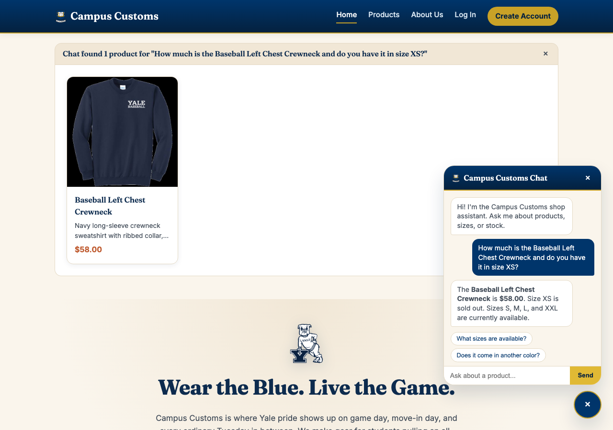
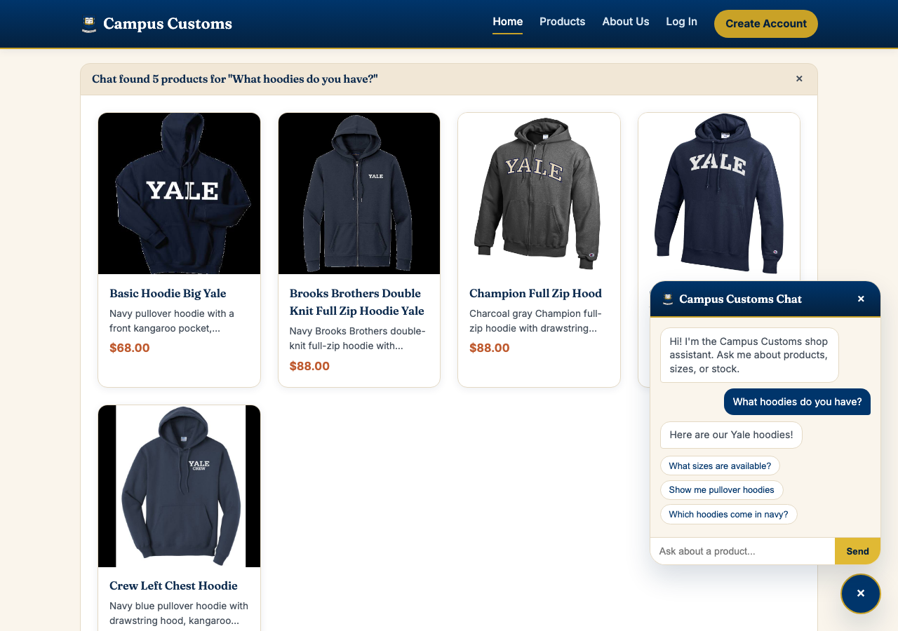
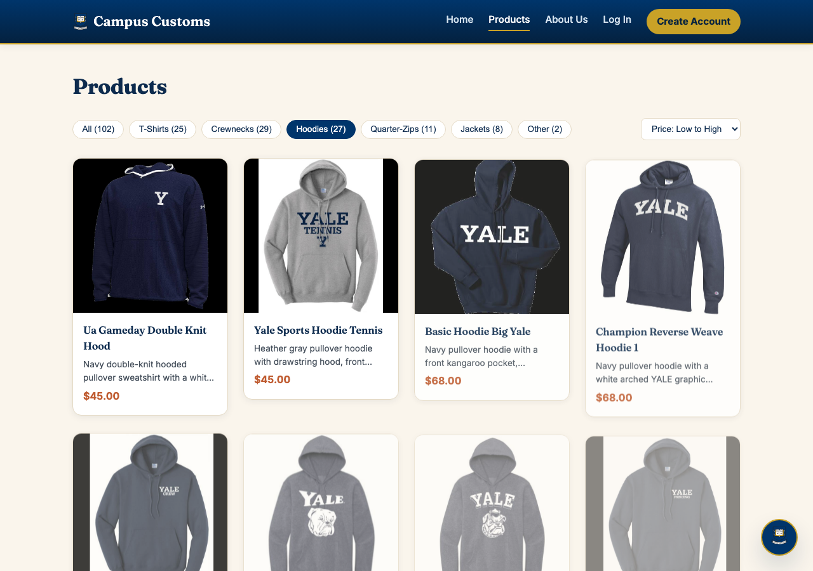

Each check below: a heading describing what's being tested, a real screenshot of the running app, and 1–2 sentences on exactly what the screenshot proves.
- All data shown (prices, stock, product names) comes live from
campus_customs.dbthrough the FastAPI backend — nothing here is mocked. - Screenshots were captured with a scripted browser (Playwright) driving the real app, the same way a shopper would use it.
Chat — Honest Inventory & Price Check
Asked the chat assistant: "How much is the Baseball Left Chest Crewneck and do you have it in size XS?"

✓ Proven: the agent answered $58.00 (the real catalogue price) and said size XS is sold out, listing S, M, L, and XXL as available — this matches the real inventory table exactly (XS quantity = 0), confirming the agent reads real stock/price via its tools (get_product_card, check_stock) instead of guessing.
Dynamic Search-Result Cards for a Category Question
Asked the chat assistant: "What hoodies do you have?"

✓ Proven: the agent's search_catalogue tool found 5 real hoodies, and the website dynamically rendered a "Chat found 5 products..." panel with full product cards (image, name, price, short description) directly on the page — not just inside the chat bubble — and the chat reply itself stayed short ("Here are our Yale hoodies!") plus offered follow-up suggestion chips.
Usability Feature — Category Filter + Price Sort (Problem 9)
On the Products page: clicked the Hoodies filter chip, then set sort to Price: Low to High.

✓ Proven: the 102-product catalogue correctly narrows to 27 hoodies (chip shows the live count and highlights active), and the grid re-orders by ascending price ($45, $45, $68, $68, …) — confirming the filter and sort usability improvement from Problem 9 actually works in the running app, not just in code.
Prompt Log Accuracy
Re-read AI_prompts.md end-to-end for Problems 1–10: every section follows the same structure (problem number/title, prompt typed, follow-up, what was lacking, outcome), each quoted prompt matches what was actually typed, and the file builds up consistently problem-by-problem with no missing or malformed sections. No corrections were needed.